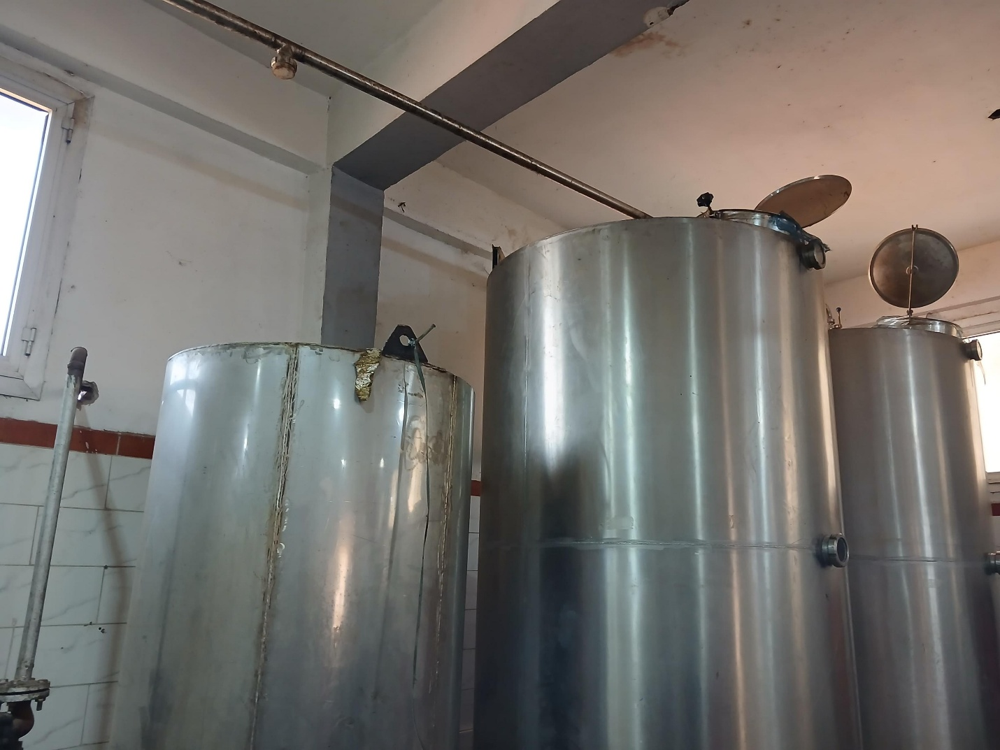

في إطار الاهتمام بالصناعات الغذائية الطبيعية، توجهنا إلى إحدى شركات إنتاج العسل للتعرف على مراحل التصنيع وأسرار الجودة، وكان لنا هذا الحوار مع صاحب الشركة الذي تحدث عن تفاصيل العمل داخل المصنع وأهم التحديات التي تواجه صناعة العسل.
في إطار التعرف على الصناعات الغذائية الطبيعية، قمت بزيارة إحدى شركات إنتاج العسل للتعرف على مراحل تصنيع العسل الطبيعي وأهم التحديات التي تواجه هذا المجال. وخلال الزيارة أجريت حوارًا مع صاحب الشركة الذي تحدث عن تفاصيل العمل داخل المصنع.
كيف بدأت فكرة إنشاء شركة لإنتاج العسل؟
وأوضح صاحب الشركة أن فكرة إنشاء المشروع بدأت من خلال حبه لتربية النحل والعمل في مجال إنتاج العسل، ثم تطور الأمر إلى إنشاء شركة متخصصة في إنتاج وتعبئة العسل الطبيعي بمختلف أنواعه مثل عسل البرسيم والموالح والحبة السوداء والسدر.
ما هي مراحل إنتاج وتصنيع العسل داخل الشركة؟
وأشار إلى أن مراحل تصنيع العسل تبدأ بجمعه من خلايا النحل، ثم يتم فرزه وتنقيته للتأكد من خلوه من الشوائب، وبعد ذلك يُعبأ داخل عبوات معقمة تمهيدًا لطرحه في الأسواق. وأضاف أن الشركة تحرص على إجراء تحاليل دورية داخل معامل متخصصة للتأكد من جودة العسل ونقائه.
ما أبرز التحديات التي تواجه صناعة العسل في مصر؟
وأكد صاحب الشركة أن من أبرز المشكلات التي تواجه صناعة العسل ارتفاع أسعار الخامات والنقل، إلى جانب تأثير التغيرات المناخية على إنتاج النحل، موضحًا أن دعم مشروعات تربية النحل يمكن أن يساعد في التغلب على هذه الصعوبات.
كيف ترى إقبال المستهلكين على العسل الطبيعي؟
كما أشار إلى وجود إقبال متزايد من المواطنين على شراء العسل الطبيعي بسبب فوائده الصحية العديدة، ونصح المستهلكين بشراء العسل من أماكن موثوقة لضمان الجودة.
ما هي خططكم المستقبلية للشركة؟
وفي نهاية الزيارة، أكد صاحب الشركة أن هدفه خلال الفترة المقبلة هو التوسع في الإنتاج والتصدير للخارج مع الحفاظ على جودة المنتج وكسب ثقة العملاء.
"هدفنا التوسع في الإنتاج والتصدير للخارج مع الحفاظ على جودة المنتج وكسب ثقة العملاء."



أترك تعليقاً...